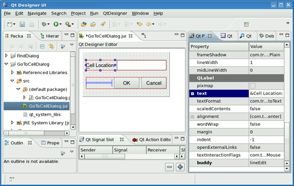
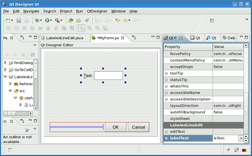

|
|
The Eclipse IDE ("Eclipse" for short) is one of the key pieces of software in the Eclipse family of more than sixty open source projects. Eclipse is very popular with Java programmers, and since it is written in Java, it runs on all major platforms. Eclipse displays a collection of panels, called views. Many views are available in Eclipse, including navigator, outline, and editor views, and each particular collection of views is called a perspective.
To make Qt Jambi and Qt Designer available inside Eclipse, it is necessary to install the Qt Jambi Eclipse integration package. Once the package is unpacked in the right location, Eclipse must be run with the -clean option to force it to look for new plugins, rather than relying on its cache. The Preferences dialog will now have an extra option called "Qt Jambi Preference Page". It is necessary to go to this page and set Qt Jambi's location, as explained in http://doc.trolltech.com/qtjambi-4.3.2_01/com/trolltech/qt/qtjambi-eclipse.html. Once the path has been set and verified, Eclipse should be closed and restarted for the changes to take effect.
The next time we start Eclipse and click File|New Project, the New Project dialog that pops up will offer two kinds of Qt Jambi project: Qt Jambi Project and Qt Jambi Project (Using Designer Form). In this section, we will discuss both of these project types by presenting a Qt Jambi version of the Go to Cell example developed in Chapter 2.
To create a Qt Jambi application purely in code, click File|New Project, choose "Qt Jambi Project", and go through each page of the wizard. At the end, Eclipse will create a project with a skeleton .java file with a main() method and a constructor. The application can be run from within Eclipse using the Run|Run menu option. Eclipse shows syntax errors in the left margin of the editor, and shows any errors that occur at run-time in a console window.
Creating a Qt Jambi application that uses Qt Designer is very similar to creating a pure code application. Click File|New Project, and then choose "Qt Jambi Project (Using Designer Form)". Again, a wizard will appear. Call the project "JambiGoToCell", and on the last page, specify "GoToCellDialog" as the class name and choose "Dialog" as the form type.
Once the wizard has finished, it will have created GoToCellDialog.java and also a Java user interface file GoToCellDialog.jui. Double-click the .jui file to make the Qt Designer editor visible. A form with OK and Cancel buttons will be shown. To access Qt Designer's functionality, click Window|Open Perspective|Other, then double-click Qt Designer UI. This perspective shows Qt Designer's signal–slot editor, action editor, property editor, widget box, and more, as shown in Figure C.2.

To complete the design, we perform the same steps as in Chapter 2 (p. 24). The dialog can be previewed as it could be within Qt Designer, and since Eclipse generates skeleton code it is also possible to run it by clicking Run|Run.
The final stage is to edit the GoToCellDialog.java file to implement the functionality we need. Two constructors are generated by Eclipse, but we only want one of them, so we delete the parameterless constructor. In the generated main() method, we must pass null as the parent to the GoToCellDialog constructor. Also, we must implement the GoToCellDialog(QWidget parent) constructor, and provide a on_lineEdit_textChanged(String) method that is called whenever the line editor's textChanged() signal is emitted. Here is the resulting GoToCellDialog.java file:
import com.trolltech.qt.core.*;
import com.trolltech.qt.gui.*;
public class GoToCellDialog extends QDialog {
private Ui_GoToCellDialogClass ui = new Ui_GoToCellDialogClass();
public GoToCellDialog(QWidget parent) {
super(parent);
ui.setupUi(this);
ui.okButton.setEnabled(false);
QRegExp regExp = new QRegExp("[A-Za-z][1-9][0-9]{0,2}");
ui.lineEdit.setValidator(new QRegExpValidator(regExp, this));
ui.okButton.clicked.connect(this, "accept()");
ui.cancelButton.clicked.connect(this, "reject()");
}
private void on_lineEdit_textChanged(String text) {
ui.okButton.setEnabled(!text.isEmpty());
}
public static void main(String[] args) {
QApplication.initialize(args);
GoToCellDialog testGoToCellDialog = new GoToCellDialog(null);
testGoToCellDialog.show();
QApplication.exec();
}
}
Eclipse takes care of invoking juic to convert GoToCellDialog.jui into Ui_GoTo-CellDialogClass.java, which defines a class called Ui_GoToCellDialogClass that reproduces the dialog we designed using Qt Designer. We create an instance of this class and keep a reference to it in a private field called ui.
In the constructor, we call the Ui_GoToCellDialogClass's setupUi() method to create and lay out the widgets and to set their properties and signal–slot connections, including automatic connections for slots that follow the naming convention on_objectName_signalName().
A convenient feature of the Eclipse integration is that it is easy to make QWidget subclasses available in the widget box to be dragged on to forms. We will briefly review the LabeledLineEdit custom widget, and then describe how to make it available in Qt Designer's widget box.
When we create custom widgets for use with Qt Designer, it is often convenient to provide properties that the programmer can change to customize the widget. The screenshot in Figure C.3 shows a custom LabeledLineEdit widget in a form. The widget has two custom properties, labelText and editText, that can be set in the property editor. In C++/Qt, properties are defined by means of the Q_PROPERTY() macro. In Qt Jambi, introspection is used to detect pairs of accessor methods that follow the Qt naming convention xxx()/setXxx() or the Java naming convention getXxx()/setXxx(). It is also possible to specify other properties and to hide automatically detected properties using annotations.

import com.trolltech.qt.*;
import com.trolltech.qt.gui.*;
public class LabeledLineEdit extends QWidget {
The first import declaration is needed to access Qt Jambi's @QtPropertyReader() and @QtPropertyWriter() annotations, which let us export properties to Qt Designer.
@QtPropertyReader(name="labelText")
public String labelText() { return label.text(); }
@QtPropertyWriter(name="labelText")
public void setLabelText(String text) { label.setText(text); }
@QtPropertyReader(name="editText")
public String editText() { return lineEdit.text(); }
@QtPropertyWriter(name="editText")
public void setEditText(String text) { lineEdit.setText(text); }
For read-only properties, we can simply use the @QtPropertyReader() annotation and provide a getter method. Here we want to provide read-write properties, so each has a getter and a setter. For this example, we could have omitted the annotations, since the accessor methods follow the Qt naming convention.
public LabeledLineEdit(QWidget parent){
super(parent);
label = new QLabel();
lineEdit = new QLineEdit();
label.setBuddy(lineEdit);
QHBoxLayout layout = new QHBoxLayout();
layout.addWidget(label);
layout.addWidget(lineEdit);
setLayout(layout);
}
private QLabel label;
private QLineEdit lineEdit;
The constructor is quite conventional. To be eligible for use in the widget box, we must provide a constructor that takes a single QWidget argument.
public static void main(String[] args) {
QApplication.initialize(args);
LabeledLineEdit testLabeledLineEdit = new LabeledLineEdit(null);
testLabeledLineEdit.setLabelText("&Test");
testLabeledLineEdit.show();
QApplication.exec();
}
}
Eclipse generates the main() method automatically. We have passed null as the argument to the LabeledLineEdit constructor and added a line to set the label's text property.
Once we have a custom widget, we can add it to a project by copying its .java file into the project's src in the package explorer. Then we invoke the project's Properties dialog and click the Qt Designer Plugins page. This page lists all the suitable QWidget subclasses that are in the project. We just need to check the Enable plugin checkbox for any of the subclasses that we want to appear in the widget box and click OK. The next time we edit a form using the integrated Qt Designer, the widgets we have added to the project as plugins will appear at the bottom of the widget box in a separate section.
This concludes our brief introduction to using Eclipse for Qt Jambi programming. Eclipse provides a powerful and functional IDE with many conveniences for software development. And with the Qt Jambi integration in place, it is possible to create Qt Jambi applications, including those that use Qt Designer, completely within the Eclipse environment. Trolltech also provides a C++/Qt Eclipse integration with most of the same benefits as the Qt Jambi one.
|
|
| Converted from CHM to HTML with chm2web Pro 2.85 (unicode) |